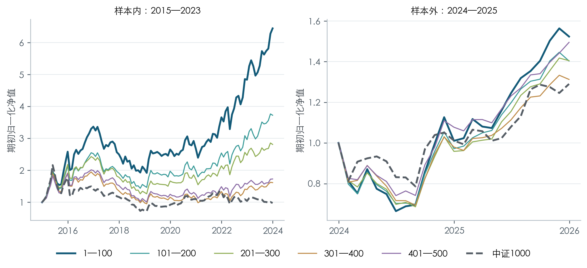
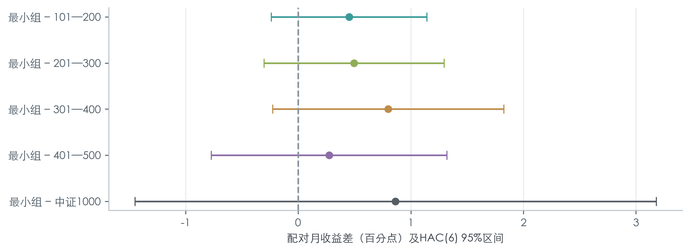
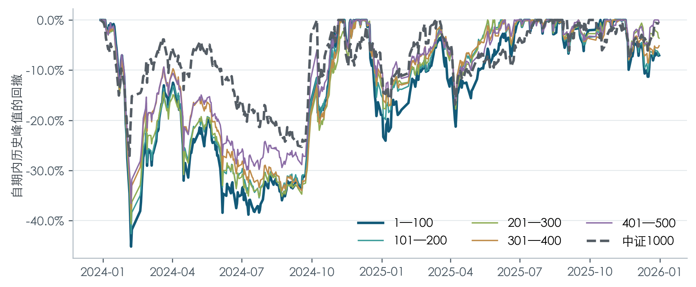
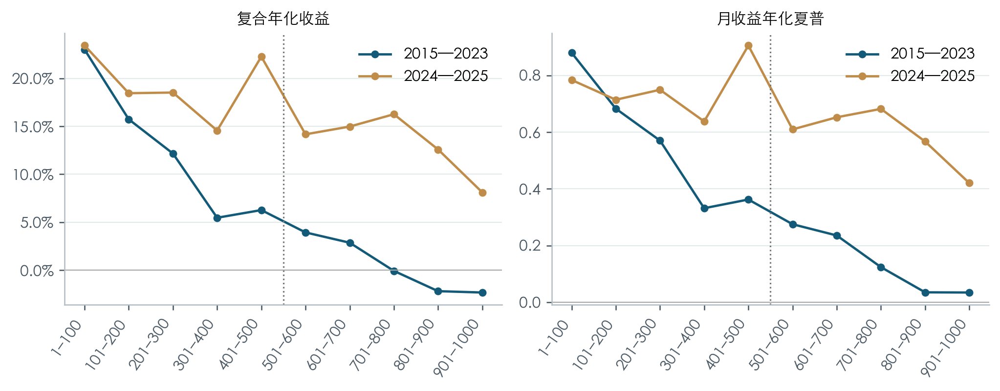
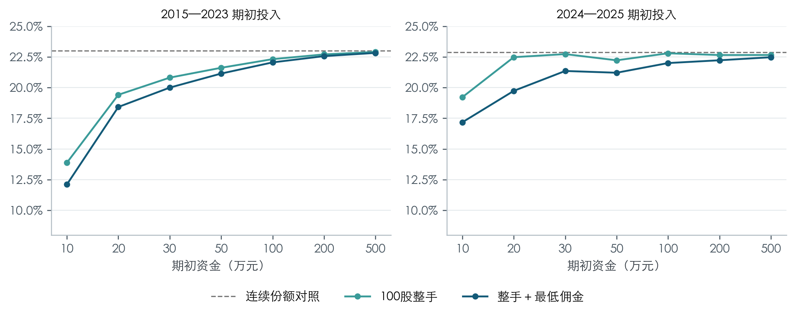

量化研究项目 · 中国A股 · 2015—2025
小市值的收益优势，
能延续到什么程度？
从五档市值区间的样本内选优出发，检验历史留出表现，再追问ST退出、收益集中与资金约束改变了什么。
最小组的收益点估计领先，但不足以证明区间优势稳健延续。
历史留出期的相对收益区间包含0，ST退出也没有消除较大回撤。
01 / 研究设计
先固定规则，再解释结果
按当时总市值升序
历史沪深主板，含原中小板及后来退市股票。剔除金融、CDR、上市不足252个交易日，以及当时已知ST、退市整理和状态未知股票后排名。
五档全部参与选优
1—100至401—500名，各100只目标等权。按单边30bp成本后月收益夏普选赢家；并列先低换手，再较大市值区间。
固定赢家做历史验证
不根据留出期结果换组。持仓出现已知风险后按可成交条件退出，卖款最早次交易日顺延补仓，保留停牌和限价约束。
验证边界：2024—2025年的结果曾在研究迭代中查看，因此是历史留出评价，不能称为未窥视或完全独立验证。
02 / 主要结果
收益领先，与风险代价同时存在
1—100名是样本内夏普赢家。以下均为主成本30bp设定，指数为中证1000价格指数。

五档完整绩效
| 过滤后总市值名次 | 年化收益 | 夏普 | 日度最大回撤 |
|---|---|---|---|
| 1—100名 冻结赢家 | 23.42% | 0.784 | -45.16% |
| 101—200名 | 18.45% | 0.714 | -42.60% |
| 201—300名 | 18.52% | 0.750 | -40.61% |
| 301—400名 | 14.56% | 0.638 | -37.72% |
| 401—500名 | 22.26% | 0.906 | -36.57% |
| 中证1000 | 13.58% | 0.595 | -27.08% |
| 1—100名 冻结赢家 | 22.99% | 0.880 | -50.61% |
| 101—200名 | 15.73% | 0.683 | -51.18% |
| 201—300名 | 12.16% | 0.570 | -54.00% |
| 301—400名 | 5.47% | 0.332 | -57.97% |
| 401—500名 | 6.27% | 0.363 | -54.05% |
| 中证1000 | -0.26% | 0.134 | -72.35% |
窄屏可左右滑动表格，点击图表可查看原尺寸。年化收益为复合年化；夏普以月收益计算、样本标准差ddof=1、无风险率0。完整结果表及定义均在仓库中。
03 / 反面证据
哪些结论需要收窄？
相对收益仍存在较大不确定性
赢家相对中证1000月均领先0.864个百分点；HAC(6) 95%区间为[-1.452, 3.180]个百分点，包含0。留出期夏普最高的是401—500名。
区间估计的是平均月收益差，不是年化收益之差。


风险退出，不等于及时止损
最小组留出期日度最大回撤为45.16%。三种ST处理规则下回撤均约45%；全样本128次风险退出成交中97次延迟，最长列示案例为166个交易日。
日线开盘成交只是近似，未模拟订单队列、容量或动态冲击成本。


收益依赖少数强势月份
2024—2025年最强5个月的对数收益贡献超过全部累计对数收益，其他月份的净损失抵消了部分上涨。当月风格关系明显，但滞后一个月后对大幅亏损的区分能力明显减弱。
这是事后集中度诊断，不能据此构造可交易的择时规则。
04 / 扩展与执行
更大市值区间，以及真实资金约束
扩展实验用于解释稳健性与实现偏差，不重新选择赢家。
扩展至1000名


整手与最低佣金


尚未回答：真实可承载资金上限、逐笔成交可行性，以及壳价值的因果贡献。早期停牌市值有估计补全，财报历史版本未全部认证，退市残值是情景假设。
05 / 阅读与复现
从结论走到计算细节
公开Notebook能从结果表复算关键统计量。完整行情回测需要另行准备已授权历史输入，不将结果复算包装成完整交易复现。